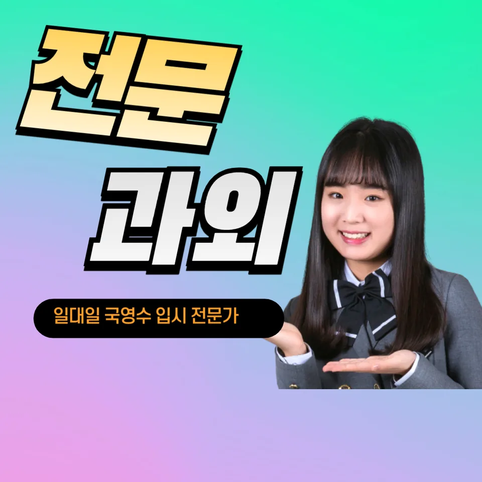

PageType : SUBJECT
URL : /경기도과외/오산시과외/궐동과외/궐동수학과외/
지역 교육환경이 수학 학습에 미치는 영향
궐동수학과외를 찾는 학생들은 대체로 학교 수업의 속도와 지역 학습 분위기 사이에서 균형을 먼저 배우게 됩니다. 같은 단원을 배우더라도 궐동수학과외에서 다루는 학습 순서는 “개념을 확인하는 시간”을 넉넉히 잡는 편이라, 수업만으로는 빈틈이 생기기 쉬운 학생에게 특히 도움이 됩니다. 지역에서 학원·스터디가 촘촘한 편이라면, 학생은 문제를 많이 푸는 것보다 어떤 방식으로 이해를 고정하는지가 성패를 가르는 포인트가 됩니다.
궐동수학과외에서는 학교 활동과 연결되는 방식으로 수학 학습이 정리됩니다. 내신 기간에 대비해 단원별 체크가 필요하지만, 그보다 앞서 시험 스타일에 익숙해지지 않으면 공부 시간이 늘어나도 성과가 흔들립니다. 그래서 궐동수학과외에서는 학교에서 진행하는 진도, 수행평가 준비 흐름, 각 학년의 난이도 변화가 언제 체감되는지를 함께 점검합니다. 학생은 “이 단원에서 어떤 실수가 반복되는지”를 스스로 설명할 수 있을 때 학습 자신감이 자리 잡기 시작합니다.
학교별 평가 방식과 학습 방향
학교마다 내신 구성과 평가 비중이 달라서, 같은 수학이어도 공부 방향이 달라집니다. 궐동수학과외에서는 학교 수업에서 강조하는 유형이 무엇인지, 서술형·과정형에서 학생이 점수를 잃는 구간이 어디인지부터 정리합니다. 시험에서 정답만 요구하는 것처럼 보여도 실제 채점은 과정에서 갈립니다. 이 차이를 놓치면 문제 해결 과정이 아니라 “맞히기 연습”만 남게 되고, 오답이 누적되어도 이유가 남지 않습니다.
수행평가가 포함되는 학교라면, 궐동수학과외의 학습은 기록 습관과 설명 태도를 함께 다룹니다. 학생은 풀이 과정을 글로 풀어내는 훈련을 하면서 개념이 단순 암기가 아니라 활용으로 연결되는 경험을 하게 됩니다. 이 과정이 안정되면, 시험이 가까워질수록 공부 계획이 흔들리지 않고 학습 흐름이 이어집니다.
학생들이 수학을 어려워하는 주요 원인
대부분의 어려움은 공식 자체보다 “이해가 끊긴 순간”에서 시작됩니다. 궐동수학과외를 통해 보면, 한 번 놓친 개념이 다음 단원에서 다른 이름으로 등장할 때 학생이 낯설음을 크게 느끼는 경우가 많습니다. 그 낯설음은 단순 겁이 아니라, 개념과 문제 상황을 연결하는 고리가 약해졌다는 신호입니다. 결국 학생은 문제를 풀어도 무엇이 부족했는지 설명하지 못해 오답이 반복됩니다.
학습 시점도 중요한데, 학생이 가장 흔들리는 시기는 보통 중간 점검이 끝나고 “성적이 생각보다 안 나오는 시기”로 이동하는 때입니다. 궐동수학과외에서는 이 구간에 공부량을 늘리기보다, 오답의 유형을 묶고 다시 복습하는 루틴을 먼저 만듭니다. 복습은 같은 문제를 반복하는 느낌이 아니라, 틀린 이유를 찾아내고 사고의 흐름을 되돌리는 과정으로 설계됩니다.
학년 변화에 따른 수학 학습의 차이
학년이 올라갈수록 수학 학습 부담은 ‘양’보다 ‘연결성’에서 커집니다. 궐동수학과외에서는 학기 초에는 개념의 기반을 다지고, 학기 중에는 학교 시험 범위에 맞춘 재구성이 필요하다는 점을 강조합니다. 상위 학년으로 갈수록 학생은 문제 해결에서 조건을 정리하고 선택하는 과정에 더 오래 머물게 되는데, 이 시간 동안 자기주도학습이 자리 잡지 못하면 공부습관이 쉽게 무너집니다.
또한 서술형이나 과정 평가가 늘어나는 환경에서는, 같은 정답이라도 표현의 설계가 점수에 영향을 줍니다. 그래서 궐동수학과외에서는 학년이 바뀌는 시점에 “문제를 읽는 방식-풀이를 전개하는 방식-마무리 확인”을 한 세트로 훈련합니다. 학생은 사고력이 확장되는 느낌을 경험하면서, 단기 성적보다 지속적인 복습과 학습 관리에 자연스럽게 관심을 갖게 됩니다.
꾸준한 학습이 실력으로 이어지는 과정
수학 실력은 한 번의 몰입보다 누적된 복습에서 만들어집니다. 궐동수학과외에서는 매주 학습을 끝내는 방식이 아니라, 다음 학습으로 넘어가기 전에 이해가 유지되는지 확인하는 흐름을 만듭니다. 공부 습관이 안정되면 시험 기간에 학습 패턴이 급격히 바뀌지 않고, 계획적인 준비가 지속됩니다. 이때 학생은 “오늘 한 공부가 내일의 문제를 푸는 힘이 된다”는 연결감을 얻게 됩니다.
시간을 효율적으로 쓰는 법 역시 반복 훈련의 결과로 생깁니다. 예를 들어 같은 단원이라도 학교에서 지정한 시험 범위를 중심으로 공부 순서를 정하면, 불필요한 심화로 시간을 소모하지 않습니다. 궐동수학과외에서는 학생의 학습 루틴을 점검하며, 복습-오답 정리-개념 활용 확인이 순환되도록 구성합니다. 결국 꾸준한 학습은 막연한 자신감이 아니라, 스스로 설명할 수 있는 근거로 확신을 바꾸어 줍니다.
문제 해결력을 키우는 학습 습관
문제 해결은 빠르게 푸는 기술이 아니라, 사고를 정리하는 습관에서 출발합니다. 궐동수학과외에서는 학생이 문제를 만났을 때 조건을 어떻게 바라보는지부터 점검합니다. 학생이 ‘무엇을 구하라는지’ ‘어떤 관계가 주어졌는지’를 문장으로 정리하면, 풀이가 막히는 순간이 줄어듭니다. 이 과정에서 사고력과 문제 해결 능력이 함께 자랍니다.
또한 오답을 분석하는 방식이 바뀌면 반복 오류가 줄어듭니다. 학생이 틀린 문제를 다시 풀 때, 답만 확인하는지 혹은 실수의 원인을 찾아 구조를 재점검하는지에 따라 결과가 달라집니다. 궐동수학과외에서는 오답이 “다시 푸는 과제”가 아니라 “다음 풀이를 바꾸는 근거”가 되도록 학습을 설계합니다. 그 변화가 누적될수록 문제 해결은 자연스럽게 자신감으로 연결됩니다.
복습과 학습 관리가 중요한 이유
복습은 부담으로 느껴지기 쉽지만, 궐동수학과외에서는 복습을 학습 성과를 유지하는 장치로 다룹니다. 학생이 개념을 이해했더라도 시간이 지나면 적용이 약해집니다. 그래서 학교 수업 이후 짧은 점검, 시험 전 단원 정리, 학기 마무리 확인처럼 복습의 타이밍을 분산합니다. 이렇게 하면 복습이 한꺼번에 몰려 스트레스로 바뀌지 않습니다.
학습 관리 측면에서 학부모가 자주 느끼는 고민도 대체로 비슷합니다. 열심히 했다고 생각해도 내신 점수가 따라오지 않는 시기, 시험 직전에만 공부가 집중되는 패턴, 공부습관의 흔들림입니다. 궐동수학과외에서는 학교-가정에서 이어지는 학습 환경을 고려해, 학생이 스스로 체크할 수 있는 기준을 정합니다. 그 기준이 있어야 시험 기간에 계획이 무너지지 않고, 자기주도학습이 공부 습관으로 굳어집니다.
수학 학습에서 확인해야 할 핵심 요소
궐동수학과외에서 학습 변화를 점검할 때는 ‘많이 푸는가’보다 ‘무엇을 확인하는가’를 봅니다. 같은 문제집을 풀어도 개념을 활용하는지, 오답을 줄이는 방식이 반복되는지, 복습이 성과로 이어지는지에 따라 결과가 달라집니다. 또한 지역 학생들 사이에서도 성장 속도는 다르기 때문에, 사고력과 문제 해결의 단계가 어디에서 멈추는지 파악하는 과정이 필요합니다.
- 학교 수업과 시험 범위에 맞는 학습 계획을 세우고 있는지 확인합니다.
- 개념을 암기하는 데 그치지 않고 문제 해결 과정에 활용하고 있는지 점검합니다.
- 틀린 문제를 다시 풀어보며 실수의 원인을 꾸준히 분석합니다.
- 단기 성과보다 지속적인 복습과 학습 습관을 유지하고 있는지 살펴봅니다.
학생이 수학을 배우며 겪는 변화는 대체로 단계적입니다. 처음에는 문제를 읽는 데 시간이 걸리고, 중간에는 오답이 늘어 불안해지며, 그 다음에야 복습과 오답 정리가 학습 리듬을 바꿉니다. 궐동수학과외는 이러한 변화를 관찰하며, 계획적인 공부습관이 시험 기간에도 유지되도록 조정합니다. 결국 학교와 가정에서 함께 이어지는 학습 환경이 쌓여 자기주도학습이 자리 잡고, 사고력이 자연스럽게 확장됩니다.
자주 묻는 질문
수학 학습은 언제부터 체계적으로 준비하는 것이 좋을까요?
학기가 시작될 때부터 학교 진도에 맞춘 계획을 세우는 편이 유리합니다. 궐동수학과외에서는 개념 기반 확인부터 시작해, 중간 점검 시점에 오답을 정리할 수 있게 흐름을 잡아 줍니다.
학교 내신과 수행평가는 어떻게 함께 준비하면 좋을까요?
내신 시험 유형과 수행평가 채점 기준을 동시에 고려해, 수업에서 다루는 개념이 과정으로 이어지도록 준비합니다. 궐동수학과외에서는 학교에서 요구하는 설명 방식과 학습 기록을 함께 정리합니다.
수학 개념이 부족한 학생도 학습 흐름을 따라갈 수 있을까요?
가능합니다. 핵심은 부족한 개념을 단순 보충이 아니라 다음 단원에서 활용되도록 연결하는 것입니다. 궐동수학과외에서는 오답 분석과 복습 타이밍을 조절해 이해가 끊기지 않게 만듭니다.
문제 해결력은 어떤 과정을 통해 향상될 수 있을까요?
조건을 정리하고 선택지를 검토하는 사고 과정을 반복해야 합니다. 궐동수학과외에서는 풀이 속도보다 사고의 흐름을 점검해, 실수 유형이 줄어드는 과정을 만들도록 돕습니다.
꾸준한 학습 습관은 어떻게 만들어갈 수 있을까요?
큰 결심보다 체크 가능한 루틴이 먼저입니다. 궐동수학과외에서는 복습과 오답 정리를 시험 전후로 분산해, 계획적인 공부습관과 자기주도학습이 이어지도록 조정합니다.
